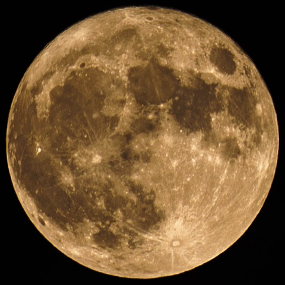

Tether
Moon
🌙
Sony A7C · browser tethering for astro & night sky
v1.0 · stable
Live view + peaking
Software AF
Long exposure · BULB
Star-trail stacking
Timelapse
Phone + PC at once
EN
Remote exposure, software AF, live view, long exposure & timelapse from any browser — phone or PC. In-app star-trail stacking. Free & open source.
한국어
노출·소프트웨어 AF·라이브뷰·장노출·타임랩스를 폰이나 PC 브라우저에서 원격으로. 앱 내 별궤적 합성. 무료·오픈소스.
日本語
露出・ソフトウェアAF・ライブビュー・長秒露光・タイムラプスをブラウザから（スマホ / PC）。アプリ内で星の軌跡を合成。無料・オープンソース。
github.com/SpaceDLFactory/TetherMoon
macOS (Apple Silicon) · Sony A7C / ILCE-7C · MIT